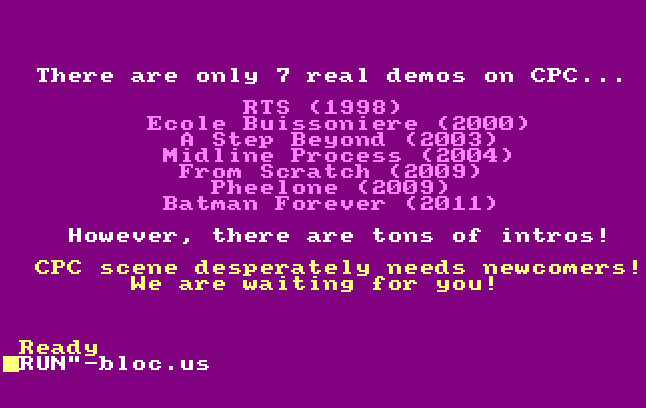

Catalog CatArt Examples
Note: All examples below use real DSK files from the test suite and show actual command outputs.
Listing Catalog Content
List Files (No Control Characters)
The list command shows only files with printable names:
Real Output:
2026-02-17T22:54:06.703Z ERROR [cpclib_catalog] Current implementation is buggy when using dsks. Please extract first the catalog with another tool for real results.
14. 0:-BLOC.US [hidden] 5Kb [Index(2), Index(3), Index(4), Index(5), Index(6)]
36. 0:BLOCUS.001 [hidden] 16Kb [Index(7), Index(8), Index(9), Index(10), Index(11), Index(12), Index(13), Index(14), Index(15), Index(16), Index(17), Index(18), Index(19), Index(20), Index(21), Index(22)]
37. 0:BLOCUS.002 [hidden] 16Kb [Index(23), Index(24), Index(25), Index(26), Index(27), Index(28), Index(29), Index(30), Index(31), Index(32), Index(33), Index(34), Index(35), Index(36), Index(37), Index(38)]
38. 0:BLOCUS.003 [hidden] 16Kb [Index(39), Index(40), Index(41), Index(42), Index(43), Index(44), Index(45), Index(46), Index(47), Index(48), Index(49), Index(50), Index(51), Index(52), Index(53), Index(54)]
39. 0:BLOCUS.004 [hidden] 16Kb [Index(55), Index(56), Index(57), Index(58), Index(59), Index(60), Index(61), Index(62), Index(63), Index(64), Index(65), Index(66), Index(67), Index(68), Index(69), Index(70)]
List All Files (Including CatArt Entries)
The listall command shows ALL entries, including CatArt graphics data:
Real Output (first 20 entries):
2026-02-17T22:54:34.583Z ERROR [cpclib_catalog] Current implementation is buggy when using dsks. Please extract first the catalog with another tool for real results.
0. => CAT ART <=
1. => CAT ART <=
2. => CAT ART <=
3. => CAT ART <=
4. => CAT ART <=
5. => CAT ART <=
6. => CAT ART <=
7. => CAT ART <=
8. => CAT ART <=
9. => CAT ART <=
10. => CAT ART <=
11. => CAT ART <=
12. => CAT ART <=
13. => CAT ART <=
14. 0:-BLOC.US [hidden] 5Kb [Index(2), Index(3), Index(4), Index(5), Index(6)]
15. => CAT ART <=
16. => CAT ART <=
17. => CAT ART <=
18. => CAT ART <=
19. => CAT ART <=
The => CAT ART <= entries are the graphical catalog display data.
List Files from a Regular Disk
Example with CATA.DSK which contains BASIC and text files:
Real Output:
2026-02-17T22:55:01.869Z ERROR [cpclib_catalog] Current implementation is buggy when using dsks. Please extract first the catalog with another tool for real results.
0. 0:-0TO31.BAS 1Kb [Index(2)]
1. 0:-CATA.BAS 7Kb [Index(3), Index(4), Index(5), Index(6), Index(7), Index(8), Index(9)]
2. 0:464BAD.BAS 1Kb [Index(10)]
3. 0:464BAD.TXT 1Kb [Index(11)]
4. 0:464GOOD.BAS 1Kb [Index(12)]
5. 0:464GOOD.TXT 1Kb [Index(13)]
6. 0:CATA2.BAS 6Kb [Index(14), Index(15), Index(16), Index(17), Index(18), Index(19)]
7. 0:CATA3.BAS 7Kb [Index(20), Index(21), Index(22), Index(23), Index(24), Index(25), Index(26)]
8. 0:FORCE1.BAS 1Kb [Index(27)]
9. 0:FORCE1.TXT 1Kb [Index(28)]
10. 0:MODE0.BAS 1Kb [Index(29)]
11. 0:MODE0.TXT 1Kb [Index(30)]
12. 0:MODE1.BAS 1Kb [Index(31)]
13. 0:MODE1.TXT 1Kb [Index(32)]
14. 0:MODE2.BAS 1Kb [Index(33)]
15. 0:MODE2.TXT 1Kb [Index(34)]
16. 0:CATA-FR.TXT 16Kb [Index(35), Index(36), Index(37), Index(38), Index(39), Index(40), Index(41), Index(42), Index(43), Index(44), Index(45), Index(46), Index(47), Index(48), Index(49), Index(50)]
17. 0:CATA-FR.TXT 1Kb [Index(51)]
18. 0:CATA-UK.TXT 15Kb [Index(52), Index(53), Index(54), Index(55), Index(56), Index(57), Index(58), Index(59), Index(60), Index(61), Index(62), Index(63), Index(64), Index(65), Index(66)]
19. 0:-T5.BAS 2Kb [Index(67), Index(68)]
20. 0:T5.ASC 2Kb [Index(69), Index(70)]
21. 0:-T6.BAS 2Kb [Index(71), Index(72)]
22. 0:T6.ASC 2Kb [Index(73), Index(74)]
23. 0:-T7.BAK 2Kb [Index(75), Index(76)]
24. 0:T7.BAK 2Kb [Index(77), Index(78)]
25. 0:-T7.BAS 2Kb [Index(79), Index(80)]
26. 0:T7.ASC 2Kb [Index(81), Index(82)]
27. 0:-T8.BAS 2Kb [Index(83), Index(84)]
28. 0:T8.ASC 2Kb [Index(85), Index(86)]
Note: Files prefixed with - are hidden (system) files.
Viewing CatArt Graphics
Display CatArt to Terminal
The cat command displays the graphical catalog in your terminal:
Real Output:
This command renders the CatArt using ANSI terminal graphics.
Generate PNG Image of CatArt
The cat and dir commands support --png to export pixel-accurate renderings:
# Generate PNG of sorted catalog
catalog BLOCUS.DSK cat --png blocus_catalog.png
# Generate PNG of directory listing
catalog BLOCUS.DSK dir --png blocus_directory.png
# Generate PNG with specific mode and locale
catalog BLOCUS.DSK cat --png catalog_mode0.png --mode 0 --locale french
PNG Output: Creates a pixel-accurate PNG image showing exactly how the CatArt would appear on a real Amstrad CPC screen, including: - Correct CPC color palette - Authentic screen modes (0, 1, 2, or 3) - Proper font rendering based on locale (English, French, Spanish, German, Danish)
Example Catalog Rendering (sorted alphabetically):

Example Directory Listing (unsorted, directory order):

Building CatArt Disks
Build from ASCII Source
Create a CatArt disk from an ASCII BASIC source file:
Real Output:
2026-02-17T22:57:32.565Z INFO [cpclib_catalog]
=== BASIC PROGRAM BYTE COMPARISON ===
2026-02-17T22:57:32.566Z INFO [cpclib_catalog] Original BASIC program: 129 commands -> 319 bytes
2026-02-17T22:57:32.566Z INFO [cpclib_catalog] Reconstructed BASIC program: 130 commands -> 320 bytes
Success! Created catart.dsk (204544 bytes)
Build and Generate PNG Preview
Build a CatArt disk and simultaneously generate a PNG preview:
# Build DSK with PNG preview
catalog T8.ASC build -o catart.dsk --png preview.png
# Build with specific mode and locale
catalog T8.ASC build -o catart.dsk --png preview.png --mode 0 --locale french
This creates both the DSK file and a PNG image showing how the CatArt will look.
The build process: 1. Parses the ASCII BASIC source 2. Generates CatArt commands 3. Creates a working BASIC program 4. Writes it to a DSK file
Understanding CatArt
CatArt is a technique where the Amstrad CPC file catalog itself contains BASIC commands that draw graphics when listed. The tool processes BASIC programs and converts them into special catalog entries that create visual effects.
Important Notes
-
DSK Processing Warning: The tool currently shows a warning about DSK handling being buggy. For production use, extract the catalog binary first with another tool.
-
File Number Format: The output format shows:
- Entry number (e.g.,
14.) - User number (e.g.,
0:) - Filename (e.g.,
-BLOC.US) - Attributes (
[hidden],[system],[readonly]) - Size in KB
-
Block allocation (
[Index(2), Index(3), ...]) -
CatArt Entries: Entries marked
=> CAT ART <=are not real files but graphical data that creates the visual catalog display.
Available Commands
Run catalog --help to see all commands:
Available Commands:
- cat - Display catalog with CatArt rendering (sorted alphabetically)
- dir - Display catalog in directory order (unsorted)
- list - List content (files with printable names only)
- listall - List all content (including control characters)
- build - Build catart from BASIC program
- decode - Extract BASIC listing from catalog
- modify - Modify catalog entries
- debug - Debug catart structure